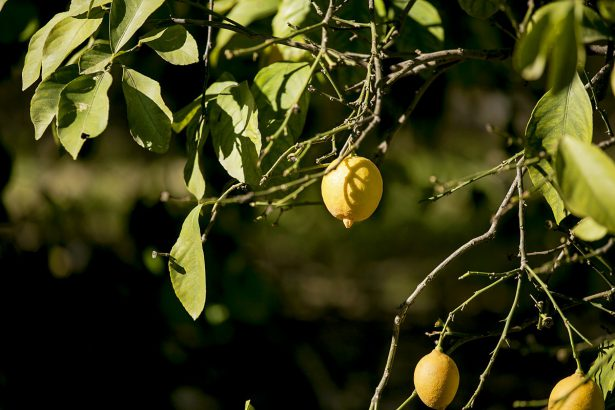
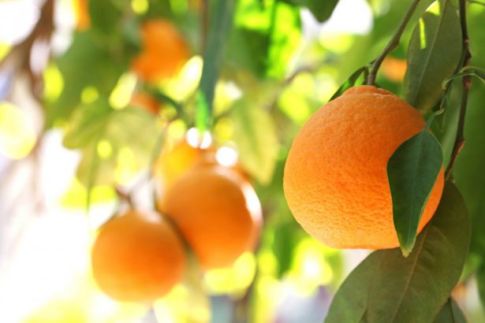
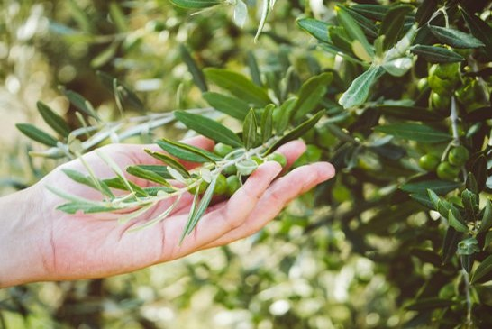

Citronnier : des conseils pour bien l’hiverner
Le citronnier est un agrume très fragile qui ne supporte pas les gelées hivernales. De la sorte, si vous souhaitez le voir fleurir au printemps, il faut impérativement l’hiverner.

Oranger : plantation, entretien et culture des oranges
En jus, en salade ou tout simplement à déguster, les oranges nous régalent et donnent du pep’s à nos jardins. Focus sur les 7 choses à savoir sur l’oranger.

8 choses à savoir sur l’olivier, l’arbre emblématique de la Méditerranée
Vous souhaitez adopter un olivier sur votre terrasse ou jardin ? Suivez les 8 informations à connaître sur l’olivier, l’arbre emblématique du sud.
Une vidéo qui nous explique comment réussir ses boutures d'arbustes la vidéo est très bien expliqué !
Allez-y jeter un coup d'oeil !